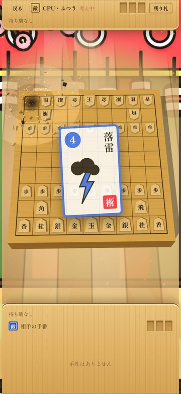
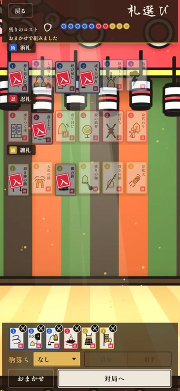
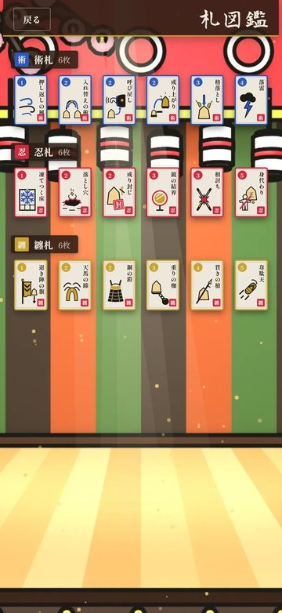
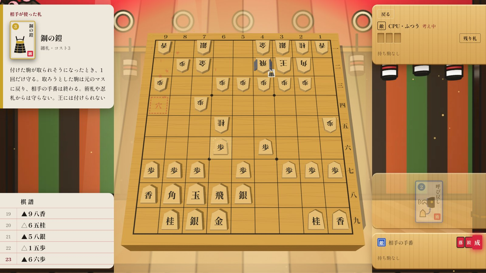

傾将棋をブラウザで遊べます：札を切れば、盤が傾く将棋
こんにちは、maosun です。
将棋に「札」を足したゲーム「傾将棋（かぶきしょうぎ）」を作りました。ブラウザですぐ遊べます。無料で、登録もいりません。
iPhone 版はいま App Store の審査中です。もうすぐ出せると思います。
この記事では、どんなゲームなのかと、実況・配信で使ってもらうときのことを紹介します。
ブラウザ版：https://maosun-dev.com/kabukishogi/

どんなゲーム？
駒の動きはふつうの将棋と同じです。ちがうのは、対局の前に「札」を持ち込めることです。
札を使うと、相手の駒に雷が落ちたり、駒が落とし穴に消えたり、王が仲間と入れ替わったりします。定跡どおりに指していても、札1枚で盤の形がひっくり返ります。
もうひとつのちがいは、「詰み」がないことです。王を取ったら勝ち、取られたら負けです。王手を放っておくこともできますが、そのまま王を取られたら終わりです。


札は術・忍・纏の3つ
札は全部で18枚。術札・忍札・纏札の3つに分かれていて、それぞれ6枚ずつあります。
- 術札：使うとすぐ効く札。たとえば「落雷」は相手の駒1つに雷を落として壊し、まわりの駒をしびれさせます。「入れ替えの術」は自分の駒2つの場所を入れ替えます（王も入れ替えられます）
- 忍札：伏せておく罠の札。相手が条件を満たすと発動します。「落とし穴」はそのマスに入った相手の駒を壊します。相手からは場所が見えません。「身代わり」は、王が取られそうになったとき、となりの味方が代わりにやられて王が助かります
- 纏札：自分の駒に付ける札。「鋼の鎧」は付けた駒を1回だけ守ります。「天馬の蹄」を付けた駒は、桂馬の動きもできるようになります
対局の前に、コストの合計が10までになるように札を選びます。同じ札は1枚までで、どれも1回きりです。迷ったら「おまかせ」で選ぶこともできます。
相手が何を持ち込んだかは、対局の前に見られます。どの罠がどこに伏せてあるかを読むのも、このゲームの楽しいところです。


将棋が苦手でも大丈夫
じつは、作っている僕も将棋はあまり強くありません。駒の動かし方がわかるくらいです。
そういう人でも遊べるように、こんな仕組みを入れました。
- タイトル画面の「学」から、遊び方を6ページで読めます（駒の動き・成り・持ち駒・札のことなど）
- 駒を選ぶと、動けるマスに印が出ます
- 「駒落ち」で、自分か相手の駒を減らしてから始められます
- 全部の札の説明は「札図鑑」でいつでも見られます


相手の強さを選ぶ
CPU の強さは2つの段に分かれています。
- 序幕：弱い・ふつう・強い。はじめての人は「弱い」からどうぞ
- 大詰：鬼・師範・傾奇者。札の使い方も将棋もぐっと強くなります。いちばん上の「傾奇者」に勝つと…何かが起きます。ぜひ自分の目で確かめてください
ほかに「稽古」もあります。相手の札を自分で選べるので、苦手な札への対策を練習できます。
実況・配信してくれる人へ
傾将棋の実況・配信・動画の投稿は自由です。収益化もかまいません。連絡もいりません。
曲はすべて Suno の有料プランで作ったもので、配信や動画にそのまま流せます。
パソコンの横長の画面で開くと、配信で見やすい「広い画面」になります。
- 盤を真ん中に大きく出し、左に札の説明、右に駒台と手札を並べます
- 相手が使った札や、発動した罠の説明が左上に残るので、見ている人にも何が起きたのか伝わります
- 左下に棋譜（最新の5手）、盤のふちに座標（9〜1、一〜九）が出ます。「いまの▲7六歩は…」のように話しやすくなります
- 棋譜は設定で消すこともできます


iPhone 版について
iPhone 版はいま審査中です。iPhone 版では、CPU との対局に加えて、友だちとも対戦できます。近くにいる友だちとは Bluetooth で、離れた友だちとは Game Center でつながります。出たらまたお知らせします！
遊んでみてください
ブラウザ版：https://maosun-dev.com/kabukishogi/
定跡なんぞ、札で破れ。ぜひ一局、指してみてください！